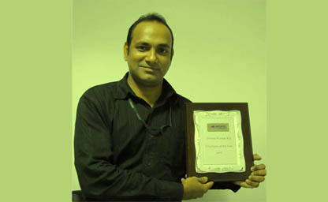
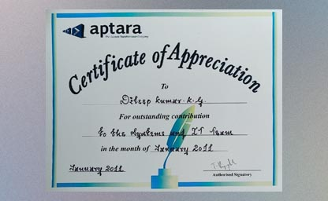
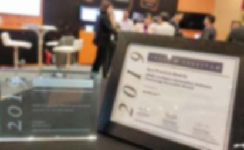

Summary of Skills and Experience:
- Effective strategic IT Project planning and oversight of IT performance.
- Managing cross-functional teams across multiple time zones to deliver business-critical IT solutions.
- Implementation of governance frameworks to monitor progress, manage risks, and ensure compliance.
- Provides Cloud solutions in AWS and Azure projects, Hybrid Identity with Azure AD .etc
- Oversees the development and maintenance of the IT strategic plan
- Approves and monitors major projects, IT budgets, priorities, standards, procedures, and overall IT performance
- Conducting IT Security Audits, Technology Audit and familiarizing with the latest developments in technology to revolve the infrastructure, corresponding to the organization's growth
Technical Project Manager - Delivery
Rapyder Cloud Solutions Pvt Ltd, Bangalore., from February 2022
Responsibilities:
• Single Point of Contact to customer for assigned Projects.
• Plan, coordinate and ensure completion on schedule & within budget. In the context of cloud migrations, responsible for Application / Server migrations.
• Actively work with all required stakeholders to ensure successful migration of workloads from source to target environment [Public – AWS, Azure & Google / Private Cloud].
• Set deadlines, assign responsibilities and monitor and summarize progress of project. Prepare reports for upper management regarding status of project.
• Ensures delivery of assigned projects within defined scope, time and cost requirements without compromising on quality
• Manage project plans and provide regular / ad-hoc reports on project progress to the management including project progress, financial performance and resource usage
• Ensure compliance with standard operation Procedure/methodology of Rapyder
• Support Project Delivery Head / Engagement Managers in managing project risks, issues, problems and activity progress to ensure project goals are achieved
• Coordinate activities and tasks among project team members within and outside Rapyder, as needed, to meet project goals and ensure project completion is on schedule within budget constraints and of the appropriate quality standards for the project scope
• Identify and resolve issues and conflicts within the project team
• Proactively manage changes in project scope, identify potential crisis and devise contingency plans
• Resource planning in agile methodology in shared pool resource with optimum usage to ensure project timelines are met.
• SME on Cloud Migration Projects for AWS and Azure.
• Supporting Solution Architect team on suggesting solutions on projects related to AWS/Azure Managed AD, Self-Managed AD, Microsoft Entra ID, O365, Cloud networking, .etc.
Project Classifications:
- AI / ML :- Utilize data and AI to drive innovation, streamline processes,and empower informed decision-making, enabling excellence in today’s analytics landscape.
- Cloud Migration :- Realize Seamless Migration and Transform the IT Operations Through Strategic Collaboration.
- VDI:- Re-envision the digital workplace, empowering enterprises with seamless experiences and adaptable infrastructure.
- Generative AI:- Transforming Industries, Empowering Innovators: Leverage GenAI, businesses can gain competitive edge, multiply outcomes, and drive growth.
- Managed Services:- Management, Maintenance,Monitoring”: All-in-One Cloud Solution.
- Modernization:- Modernize the enterprise.applications and maximize the business value with an AI-powered, scale-driven, business-focused approach.
- Pinpoint:- Personalize. Engage. Convert.Introducing Pinpoint, the Marketing Communications Service built for one-to-one customer experiences.
Director – IT Operations,
AntWorks Inc, Bangalore., from March 2019 to January 2022
Responsibilities:
* Managing Global IT Operations.
* Provide technical leadership and management of IT projects from conception through deployment. Establish project
* Develop and test the IT disaster recovery plan in conjunction with the site’s business continuity plan.
* budgets, resource plans, milestones, tracking metrics, and success measures
* Heading IT professional across the globe that includes of Cloud support, Server Support, Network support, Voice Support, IT Security Team, ERP/CRM, Desktop Support, Application Implementation Team, JIRA Support, and Helpdesk team.
* Attending all client meetings and interacting with clients for infra support for product implementation.
* Managing IT infrastructure of Cloud and On-Prem platforms across the globe.
* SME for AWS|Azure cloud infra operations, Server Virtualization, Microsoft Office365. Etc.
* Vendor Management and contract negotiations
* Working with Dev|Sales|Pre-sales|PM’s and Delivery teams to understand their requirements to provide better IT support.
* Gathering requirements from DEV | Project Managers in upcoming quarters for budgeting VM’s|PC’s|MAC|Mobile devices and Software.
* Managing software licensing policy.
* Maintained Global Hardware/Software inventory details for all capitalized items weather purchased locally or STPI bonded.
* Managing helpdesk team/IT support for L1 support and call routing processes.
* Maintaining SLA of 95% for logged calls for internal and external client tickets.
* Dotted Line reporting manager for production Support team on L1 & L2 calls for external clients.
* Participating in Business Continuity Plan drill within the stipulated 48 hours of RTO.
* Conducting weekly meetings for IT team to reviews of cases and attended tickets, conducting team development programs.
* Conducting regular technology audits – ISO, PCI–DSS, HIPPA and GDPR.
Major Projects & Description:
* Developed strategy and lead IT Support team for 100% WFH for global employees during Covid-19 lockdown situation with no downtime.
* Lead Cloud Support team on migration of On-Prem IT infra to Cloud (AWS and Azure) platform and setting up of SSO via Azure AD
* ctively involved in setting up of IT infrastructure in Bangalore, Mumbai, Pune, UK, US and Singapore facilities.
* Maintained inventory for hardware/software and conducted frequent audits.
* Lead the team for setting up of ERP process for finance, sales, HR and Procurement team’s process.
* Implemented JIRA Service Desk for Production Support and JIRA Software for Delivery and QA teams.
Manager – IT Infrastructure,
PurpleFrame Technologies (TalentQuest), Bangalore., from January 2017 to February 2019
Responsibilities: * Managing IT infrastructure of Private and Cloud platforms.
* Managing AWS cloud Virtual Servers, Microsoft Office365 mail accounts, Google mail services. Etc.* Administering Render Farm for AutoDesk Maya and 3DxMax applications, Application servers in windows 2016 and SVN subversion servers in Ubuntu Linux.
* IT Operations and Team Management * Vendor Management and contract negotiations * Carrying out IT roles by coordinating with HO. * Working with production team to understand their requirements to provide better support. * Gathering requirements from Project Managers in upcoming quarters for budgeting Servers/PC/MAC/Mobile devices and Software.
* Managing software licensing policy
* Maintained the hardware inventory details for all capitalized items weather purchased locally or STPI bonded
* Managing helpdesk team/IT support for L1 support and call routing processes.
* Maintaining SLA of 95% for logged calls
* Involving in the audit of client’s IT Governance and Compliance function for their Global Outsourced Operations.
* Participating in Business Continuity Plan drill within the stipulated 48 hours of RTO.
* Conducting weekly meetings for IT team to reviews of cases and attended tickets, conducting team development programs, motivational sessions and showing inspirational videos.
Major Projects & Description: * Developed strategy for cloud/virtualization migration and implementation best practices.
* Migrated the webservers from Godaddy to AWS cloud server infrastructure.
* Architect and deployed private cloud platforms across Amazon Web Services by using services like, EC2, IAM, S3, VPC, Route 53..etc
* Migrated Active Directory service across all the locations, Migrated SEPM, WSUS and other application servers to Windows 2016.
* Migrated Email accounts from MS Exchange to Office 365 by linking AD to Azure.
* Setup network infrastructure for facilities in all production floors using Cisco 3650 core switch and Cisco SG300 access layer switches.
* Setup Sonicwall firewalls as internet gateway via LDAP authentication.
* Set up server infrastructure with Dell Power Edge R530 and R630 servers and created VMs in Esxi6.5.
* Setup storage infrastructure by using Dell PowerEdge R730 XD 12 bay dual processor storage and Netgear, Lenovo EMC storages for backups.
* Setup Render Farm with Dell PowerEdge M1000E CHASIS, 32 numbers of Dell PowerEdge M610 blades and Dell PowerEdge R710 as Repository server for AutoDesk Maya rendering.
* Created inventory for hardware/software and conducted audit by coordinating with admin team to fix asset ID details.
* Introduced new processes for smooth handling of helpdesk ticketing system, IT purchases, employee join and exit formalities, Email creation/deletion..etc
Manager - IT Operations,
Aptara Inc, Trivandrum., from Oct2009 to Dec2016
Responsibilities: Managing IT infrastructure and supporting internal clients.
* Carrying out IT roles by coordinating with HO and other facilities.
* Working with production team to understand their requirements to provide better support.
* Gathering requirements from different BUs in upcoming quarters for budgeting Servers/PC/MAC/Mobile devices and Software.
* Managing software licensing policy
* Vendor management
* Maintained the hardware inventory details for all capitalized items weather purchased locally or STPI bonded
* Managing helpdesk team/NOC for L1 support and call routing processes.
* Maintaining SLA of 95% for logged calls
* Managing desktop support team for L2/L3 support calls for providing support for 750+ (MAC/PC/Laptop) nodes and 1400 users working in 24X7. And remotely supporting Chennai facility.
* Coordinating with Windows/Unix server team, network team for L3 level support.
* Administering Citrix network and corporate network with different VLANs.
* Administering ADC, DHCP, DNS, File & Print Services, SEPM, WSUS servers, and other application servers in VMware vSphere with Esxi 5.5 VMs of Windows 2012, 2008 and CentOS servers.
* Administering EMC storage.
* Taking regular data backup using CA ARC server Backup.
* Installation and managing of Symantec End Protection Manager Server and clients, taking daily reports and take preventive actions, Managing of Symantec Web gateway in inline & proxy mode.
* Managing Audio/ Video conferencing services.
* Involving in the audit of client’s IT Governance and Compliance function for their Global Outsourced Operations.
* Participating in Business Continuity Plan drill within the stipulated 48 hours of RTO.
* Conducting team meeting and motivational sessions.
Honors and Recognitions in Aptara :
* Rewarded with Aptara Global Employee of the Year in 2013 for contribution towards setting up of IT infrastructure for new facilities and for the outstanding team management supporting 1400 staffs of Aptara Trivandrum facility.
* Honored with Aptara Trivandrum’s Employee of the Month of February2011, for the contribution and commitment towards internal customer satisfaction
MCA
I have done my post graduation in Master of Computer Applications from Madurai Kamaraj University. Madurai Kamaraj University is a Statutory University, established in 1965 by Govt. of Tamilnadu. It is recognized and funded by UGC and is a member of Association of Indian Universities. It has been reaccredited by NAAC with grade A.
The Directorate of Distance Education of this university was established in 1971 and has a student strength of about 1.20 lakhs.
The University is accorded with the status of " University with Potential for Excellence " - A status conferred by the University Grants Commission. So far 9 such Universities in the Country were awarded this status.
Bachelore Degree
I completed my Bachelor's degree at Sree Vidyadhi Raja NSS College (SVR NSS College), Vazhoor,
located in Kottayam District, Kerala affiliated with M.G.University. I initially began my degree studies at
University College, Thiruvananthapuram, under Kerala University. However, midway through the course, I transferred
to M.G.University due to my family’s relocation from Thiruvananthapuram to Kottayam following my father’s bank transfer.
Pre-Degree
I have done by Pre-Degree from Mahatma Gandhi College, Thiruvananthapuram., under Kerala University.
Mahatma Gandhi College, the institution dedicated to the memory of the Father of the Nation was established in the year 1948 by the legendary social reformer Bharatha Kesari Sri Mannathu Padmanabhan. It is one of the largest and oldest institutions of higher education in the capital city of the state of Kerala run by the largest educational agency of Kerala, the Nair Service Society.
SSLC
SSLC stands for Secondary School Leaving Certificate. It is issued by the secondary board of the school on successful completion of class 10th. ... In states like Kerala, Tamil Nadu and Karnataka, SSLC is a criteria for common eligibility in examinations
The schools and colleges in Kerala are run by the government or private trusts and individuals. After 10 years of secondary schooling, students typically enroll at Higher Secondary School in one of the three streams—liberal arts, commerce, or science. Upon completing the required coursework, students can enroll in general or professional degree programs
ST JOSEPH’S HIGHER SECONDARY SCHOOL
I have completed my school studies in St. Joseph’s Higher Secondary School, Thiruvananthapuram, Kerala. The Carmelite Missionaries started this school in 1857 in the building which is at present the AG’s office, Trivandrum. Later it was shifted to the campus near to St.Joseph’s Cathedral, Palayam. In 1905, the school was again shifted to its present location near the General Hospital, Trivandrum. Sri.Madhava Rao, the then Dewan of the erstwhile Travancore declared St.Joseph’s as a recognized school of the Travancore State at a public meeting held at the school campus on 18th January 1905.
Professional Certifications
ITIL Foundation Certificate V 5.5.
The ITIL Foundation certification will introduce you to the key elements, concepts and terminology used in the ITIL® service lifecycle.
AWS Certified Solutions Architect - Professional
Microsoft Certified : Microsoft Azure Architect Expert
AZ-304 Microsoft Azure Architect Design
AZ-303 Microsoft Azure Architect Technologies
MCSE: Cloud Platform and Infrastructure
Implementing Microsoft Azure Infrastructure Solutions
MCSA: Windows Server 2016 Microsoft Certified Solutions Associate (MCP ID: 6074302)
MCSA: Windows Server 2012 Solutions Associate
Installing and Configuring Windows Server 2012
Administering Windows Server 2012
Configuring Advanced Windows Server 2012 Services
MCITP: Server Administrator on Windows Server 2008
MCSA : Windows Server 2003 Systems Administrator:
Microsoft Certified Systems Administrator: Messaging on Windows Server 2003
Microsoft® Certified Technology Specialist: Microsoft Windows Vista, Configuration.
CCNA : Cisco Certified Network Associate (ID: CSC011171904)



Aptara Global Employee of the Year in 2013
Rewarded with Aptara Global Employee of the Year in 2013 for contribution towards setting up of IT infrastructure for new facilities and for the outstanding team management supporting 1400 staffs of Aptara Trivandrum facility.

Aptara Employee of the Month - February 2011
Honored with Aptara Trivandrum’s Employee of the Month of February2011, for the contribution and commitment towards internal customer satisfaction.

Team of the Quarter - Dec 2019 in AntWorks Inc
IT Team has been awared as "Team of the Qarter - 2019" for the out standing Team effort
Team of the year -2018 in TalentQuest India
IT Team has been awared as "Team of the year -2018" for the Team effort in setting up of new Data Center and office expansions project
1.Reading:
Avid reader of technology related publications
2. Strategic Games:
Enjoy playing chess, Badminton, Cricket, Football..etc.
3. Drawing & Painting:
Attended multiple school level painting competition and won district champian during school years
4. Meditation:
Organized and managed meditation classes in my Previous companies.
5. Singing:
I am a passionate singer of timeless Hindi melodies and devotional Bhajans. I regularly perform at small public stage shows,
bringing classic tunes to life for live audiences. In addition, I actively manage my YouTube channel, where I share recordings of
my performances and curated musical renditions, aiming to preserve and spread the beauty of vintage Hindi music and spiritual songs
to a wider audience
6. Playin musical instruments
I am deeply passionate about music and enjoy playing a variety of instruments that bring melodies to life.
I regularly perform in small public stage shows, where I play the guitar and keyboard to accompany musical band.
For devotional gatherings and Bhajans, I play the harmonium, adding a soulful touch to spiritual renditions.
I also manage my own YouTube channel, where I share recordings of these performances, aiming to preserve the charm of vintage
music and clssix tunes while reaching a broader audience
I’m grateful for your time and consideration, and I welcome any opportunity to connect or collaborate.